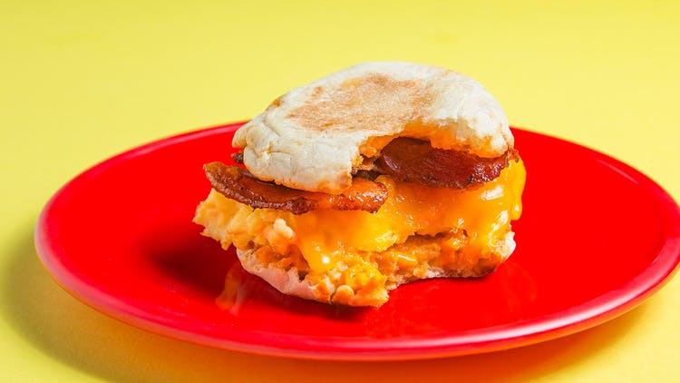

The Ultimate Breakfast Sandwich

Ingredients
Sriracha Butter
- 2 tablespoons Sriracha
- 1/4 cup room temperature Butter
Breakfast Sandwich
- 1 English muffin
- 1 tablespoon Sriracha butter
- 3 large eggs
- 1 tablespoon whole milk
- Pinch kosher salt
- 1 tablespoon unsalted butter
- 2 slices cheddar
- 2 slices thin-cut bacon, cooked
Directions
- Make the Sriracha butter: Using a rubber spatula, combine the butter
and Sriracha in a small bowl.
- Make the breakfast sandwich: Toast the English muffin and spread the
inside halves evenly with the Sriracha butter.
- In a large bowl, whisk the eggs with the milk and season with salt.
- In a large nonstick skillet, melt the butter over medium heat. When
the butter begins to foam, add the eggs and reduce the heat to low.
Using a rubber spatula, stir constantly, scraping down and around the
sides, until mostly set on the bottom, 2 to 3 minutes. Fold the omelet
over itself to make a half moon. Fold again to resemble a square shape.
- To serve, top the bottom half of the English muffin with the egg,
cheese slices and bacon. Close with the remaining top half and eat
immediately.
Contact Me
For more information on this sandwich, go check out the
original website.
Or contact me at evan.wilken@umontana.edu
Or you can even send a comment to
University of Montana.